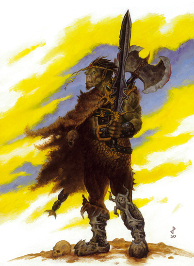

世界之脊山脉（Spine of the World）中有许多兽人的部落，这些危险的野蛮居民时常蜂拥而下侵袭掠夺费伦大陆上的文明开化地区，而兽人战王就是统领着这些无纪律兽人军队的残暴将领。他们的身体上时常满布伤痕（其来源可能是作战或宗教仪祭），因此十分引人注目。
由于野蛮人与战士兼野蛮人都精通战斗技巧且通常吸引大 批部属，因此非常适合进阶成为兽人战王。有些牧师兼野蛮人为了带领更多的追随者发动宗教圣战，也会选择进阶成为兽人战王。然而，或许吟游诗人兼职野蛮人是 最有潜力成为兽人战王的组合，因为诗人与战王都是能指挥控制大量群众的职业，所以他能将原本的能力与战王的职业能力累加，更有技巧地激励自己的追随者。
非玩家人物的兽人战王通常在战场上现身，指挥着自己的兽人部族作战。而在非战斗期间，他们则通常在部落中训练自己的军队，为下一次战争储备战力。
生命骰：d12
职业条件：
种族：兽人、半兽人、或塔那罗克（Tanarukk，兽人与恶魔的混血）
基本攻击加值：+5
阵营：任何非善良
技能：胁迫8级 Intimidate，骑术5级 Ride，野外求生5级 Wilderness Lore（3.5版称为生存 Survival）
专长：战王血脉 Blood of the Warlord或强权即公理 Might makes Right，领导力 Leadership
特殊：野蛮人职业的狂暴能力（Rage）
--
附注：FR特殊专长
战王血脉 Blood of the Warlord [一般专长]
描述：你有极高的魅力，能操纵许多兽人同胞。
先决条件：兽人，基础领导力数值10以上
效果：你生来就注定要成为兽人的领导者。你对兽人的交涉以及胁迫技能检定有+2奖励；此外，当你位于追随者的视线中时，他们的意志检定与攻击命中掷骰都会有+1士气加值。
强权即公理 Might makes Right [一般专长]
描述：你的力量十分强大，让你拥有更多慕名前来的追随者。
先决条件：力量13，领导力专长
效果：当计算你能拥有多少追随者时，你可以把力量调整加到领导力数值之上。
--
职业技能：
以力量为关键属性者：跳跃 Jump
以敏捷为关键属性者：骑术 Ride
以智力为关键属性者：手艺 Craft
以智能为关键属性者：聆听 Listen，察言观色 Sense Motive，野外求生 Wilderness Lore
以魅力为关键属性者：欺骗 Bluff，胁迫 Intimidate
每级技能点数：2+智力调整
职业特性：
擅长武器与防具 Weapon & Armor Proficiency：
兽人战王不擅长任何武器、盔甲、以及盾牌。
聚集部属 Gather Horde [特异能力]：
与 其它种族的领导者相比，兽人战王可以聚集更多的追随者。第1级起，当计算一位兽人战王所能拥有的追随者时，其数量以原数值的1.5倍计算，不过这些多出的 追随者都一定是兽人。举例来说，一位拥有15点领导力点数的角色原本可以拥有20位1级、2位2级、以及1位3级的追随者，但一位1级的兽人战王就能拥有 30位1级、3位2级、以及1位3级（小数点无条件舍去）的追随者，且额外的那10位1级与1位2级的追随者一定是兽人。第3级起，其领导力数值改为以原 本的2倍计算。
提振士气 Inspire Courage [超自然能力]：
第2级起，兽人战王将得到提振士气的能力（与吟游诗 人相同的能力）。战王可以藉由发表激昂的演说鼓励他的同盟，提升他们的勇气与战力。要达到提振士气的效果，他的盟友必须听一整轮的演说。只要战王持续演 说，此效果便可继续，直到战王停止演说之后再过5轮为止（或是他的盟友听不见演说之后5轮）。演说时，兽人战王仍可以战斗，但不能施法、启动魔法物品以施 展法术（如滚动条）、或以言语启动魔法物品。受影响的盟友对魅惑与恐惧效果有+2士气加，且攻击检定与武器伤害掷骰都有+1士气加值。当战王处于狂暴的状 态时也可以使用此能力，不过在这种情况下，他的「演说」会变成野兽般的怒吼与狂嚎。
决战狂暴 Final Rage [特异能力]：
第5 级起，兽人战王可以用实时动作发动此能力，使他周围10漳诘拿擞眩ò括他自己）都进入狂暴状态以发动猛烈的决定性攻击（即使盟友没有狂暴化的能力，或是 已用尽当天的狂暴次数）。如果受到影响的盟友（包括他自己）已经处于狂暴状态或是有「强力狂暴」（greater rage）的能力，则改为进入「强力狂暴」状态（如果被影响的生物已经处于强力狂暴状态，则此能力对之无任何影响）。此能力所带来的狂暴状态会持续到下一 回合轮到战王行动时结束，受影响的盟友也会遭受结束狂暴状态的处罚（举例来说，盟友们会陷入「疲倦」fatigue状态，已经疲倦的盟友则陷入「力竭」 exhausted状态）。
附表：兽人战王
等级 基本攻击加值 强韧M反射M意志豁免加值 职业特性
1 +1 +2M+0M+2 聚集部属（1.5倍）
2 +2 +3M+0M+3 提振士气
3 +3 +3M+1M+3 聚集部属（2倍）
4 +4 +4M+1M+4 －
5 +5 +4M+1M+4 决战狂暴
--
资料来源：费伦大陆种族志《Races of Faerun》
译者：一凡